de Proyectos Ejecutados en Chile
Soluciones Profesionales
en Aislamiento e
Impermeabilización
Aplicamos poliuretano proyectado de celda cerrada (λ = 0,024 W/m·K) y poliurea pura de alta elongación (≥ 400%) en terreno, con reactores industriales de alta presión. Sellamos, aislamos y protegemos infraestructuras residenciales, comerciales e industriales con tecnología que dura décadas.
Años de Experiencia en el Rubro
Chile — Norte, Centro, Sur y Antártica
de Obras con Garantía Técnica Escrita
Sectores que atendemos en todo Chile
Problemas de aislamiento e impermeabilización que Aispoltec resuelve de forma permanente
Si alguno de estos problemas afecta tu proyecto, tienes una solución técnica y definitiva más cerca de lo que crees. Aislar temperatura, controlar humedad y sellar filtraciones no es opcional — es rentable.
Temperatura extrema interior
Un galpón sin aislamiento puede superar los 50 °C en verano en el norte de Chile. Las mermas en productos perecibles, el sobrecalentamiento de equipos y la caída de productividad del personal cuestan más que toda la obra de aislamiento.
Aislamiento Térmico de Celda CerradaGoteras y filtraciones de agua
El agua penetra por microfisuras imperceptibles a simple vista. En 2–3 temporadas de lluvia, la humedad corroe el acero estructural, pudre la madera y genera hongos que incumplen normativas sanitarias. Una membrana de poliurea aplicada correctamente lo detiene de forma duradera.
Impermeabilización con Poliurea PuraFacturas de energía desorbitadas
Sin aislamiento, entre el 25% y el 40% de la energía gastada en climatización se escapa por la envolvente del edificio. Con poliuretano de celda cerrada (λ = 0,024 W/m·K), esa fuga se detiene y el sistema de climatización trabaja a la mitad de su capacidad.
Ahorra hasta 40% en climatizaciónContaminación acústica industrial
La norma DS 594 del MINSAL fija límites de 85 dB en jornadas de 8 horas. Las empresas que superan ese umbral sin medidas acústicas enfrentan multas de la SEREMI de Salud y licencias médicas por hipoacusia laboral. El poliuretano de celda abierta (NRC ≥ 0,80) resuelve el cumplimiento normativo.
Aislamiento Acústico de Celda Abierta¿Cómo trabajamos?
Un proceso ágil, técnico y transparente — de la consulta a la garantía en 4 pasos.
Solicita
Contáctanos por WhatsApp, teléfono o formulario. Respondemos en menos de 24 horas hábiles.
Respuesta en < 24h
Evaluamos
Realizamos una visita técnica en terreno sin costo para medir superficies y definir el polímero adecuado.
Visita sin costo
Aplicamos
Nuestro equipo especializado proyecta el polímero con reactores industriales de alta presión, garantizando cobertura uniforme.
Equipo especializado
Garantizamos
Entregamos garantía extendida por escrito, respaldando adherencia, resistencia y estanqueidad ante la aplicación realizada.
Garantía por escrito
Nuestros Servicios
Ofrecemos soluciones integrales para aislar temperatura, controlar humedad y sellar filtraciones en todo tipo de infraestructuras. Aplicamos poliuretano proyectado y poliurea pura con tecnología industrial en terreno, garantizando máxima resistencia, eficiencia energética y durabilidad en cada obra a lo largo de Chile.
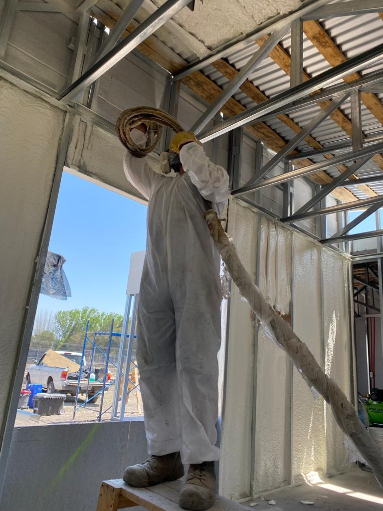
Aislamiento Térmico
Proyección de espuma rígida de poliuretano de celda cerrada con conductividad térmica λ = 0,022–0,028 W/m·K — el valor más bajo de cualquier aislante rígido. Forma una barrera monolítica que elimina puentes térmicos, reduce hasta un 40% el consumo de climatización y adhiere directamente sobre metal, hormigón y madera sin anclajes.
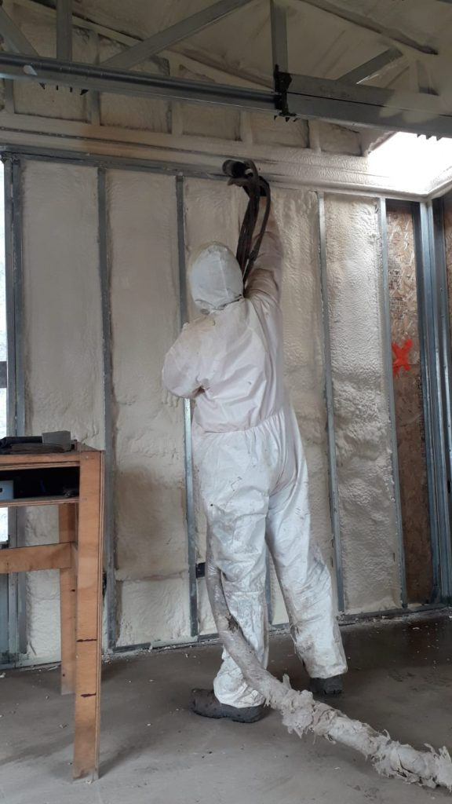
Aislamiento Expansivo
Inyección controlada de poliuretano expandible de baja presión con ratio de expansión de hasta 30:1. Penetra y sella herméticamente grietas, cámaras de aire y espacios inaccesibles en techumbres, muros y tabiques sin demoler ni perforar superficies visibles. Densidad final: 8–15 kg/m³.
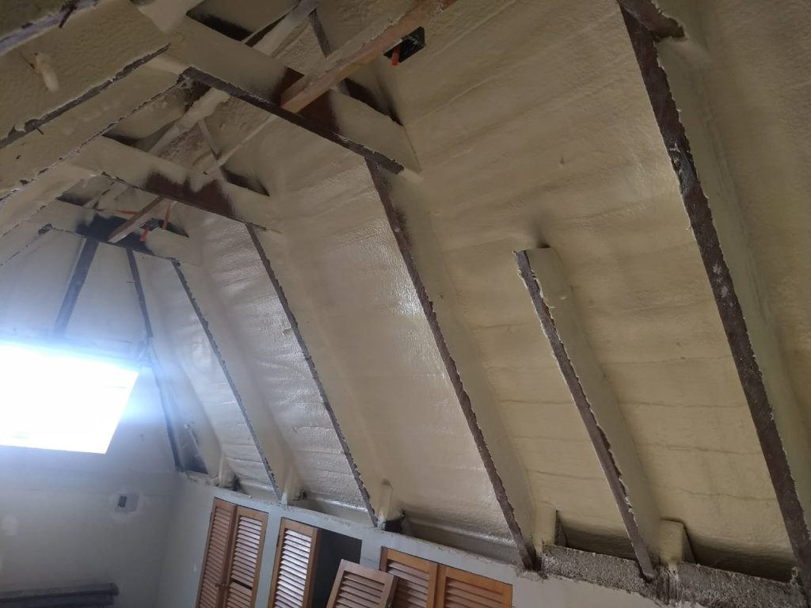
Aislamiento Acústico
Proyección de espuma flexible de poliuretano de celda abierta (NRC ≥ 0,80) que absorbe ondas sonoras en lugar de reflejarlas. A diferencia de la celda cerrada, su estructura porosa atrapa el sonido y elimina reverberación en galpones productivos, cabinas técnicas y recintos comerciales con vibraciones de maquinaria.

Impermeabilización y Filtro UV
Aplicación de poliurea pura 100% sólidos a 65–80 °C con tiempo de gel de 3 a 7 segundos. Genera una membrana monolítica sin juntas con elongación a la rotura ≥ 400%, resistencia a tracción ≥ 12 MPa y rango de servicio de −50 °C a +130 °C. No emite COVs. Transitable en 30 minutos.
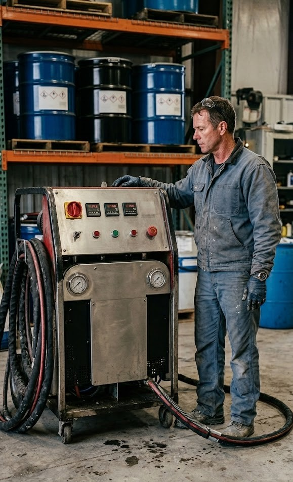
Arriendo de Maquinaria
Arriendo por jornada de reactores de alta presión Graco Reactor (1.500–3.000 PSI, 60–80 °C) para proyección profesional de poliuretano y poliurea. Incluye supervisor técnico especializado en terreno para calibración de relaciones de mezcla, control de temperatura y resguardo de calidad de la aplicación.
Cómo trabajamos en cada proyecto
Evaluación en Terreno
Visita técnica gratuita antes de cada proyecto
Garantía por Escrito
Certificado técnico entregado en cada obra
Personal Capacitado
Operadores con formación técnica en polímeros
Insumos de Calidad
Polímeros adquiridos a proveedores reconocidos del rubro
¿Cuánto puedes ahorrar?
Ingresa los datos de tu proyecto y calcula el ahorro estimado en climatización con aislamiento de poliuretano proyectado.
Datos del proyecto
Estimación de ahorro Pesos Chilenos (CLP)
Completa los datos y presiona "Calcular mi ahorro" para ver el estimado de tu proyecto.
Ahorro mensual estimado
—
—
Ahorro anual estimado
—
—
CO₂ evitado al año
—
kg de CO₂
Retorno de inversión
—
años estimados
⚠️ Estas son estimaciones aproximadas basadas en tarifas CNE 2025 ($ 118 CLP/kWh), auditorías energéticas CORFO y consumos típicos del sector. Los resultados reales dependen del estado actual del recinto, espesor aplicado y zona exacta. Solicita una evaluación técnica gratuita para obtener un cálculo preciso a tu medida.
¿Por qué elegir Aispoltec?
Nacimos de la convicción de que el aislamiento y la impermeabilización bien ejecutados cambian radicalmente el desempeño de una infraestructura. Con más de 15 años aplicando poliuretano y poliurea en todo Chile — desde la minería del norte grande hasta instalaciones en el territorio antártico a −50 °C — hemos construido un estándar técnico que pocas empresas del rubro igualan. Cada obra es una garantía firmada.
Experiencia Comprobada
Más de 15 años protegiendo proyectos complejos de alta exigencia en todo Chile, desde el norte grande hasta el territorio antártico.
Tecnología de Punta
Utilizamos reactores de alta presión y formulaciones avanzadas para un control exacto de dosificación y espesor en cada metro cuadrado aplicado.
Garantía de Calidad
Cada aplicación cuenta con el respaldo de una garantía extendida por escrito, avalando adherencia, resistencia y estanqueidad del trabajo ejecutado.
Resultados Comprobados
La diferencia es visible. Presiona cualquier imagen para ver el caso de éxito detallado a pantalla completa.
Aislamiento Térmico Expansivo
Aplicación de poliuretano proyectado de alta densidad. Elimina puentes térmicos, sella fisuras y garantiza control de temperatura en techumbres y muros.
Impermeabilización de Poliurea
Membrana elástica continua de alta resistencia que soporta agua estancada, tránsito pesado y radiación UV extrema con mantenimiento adecuado.
Proyecto Aispoltec
Proyectos Realizados
Desde aislamiento térmico de galpones y cámaras frigoríficas hasta impermeabilización de azoteas y techumbres metálicas — obras reales en todo Chile que demuestran que aislar temperatura, controlar humedad y sellar filtraciones es una inversión de largo plazo.
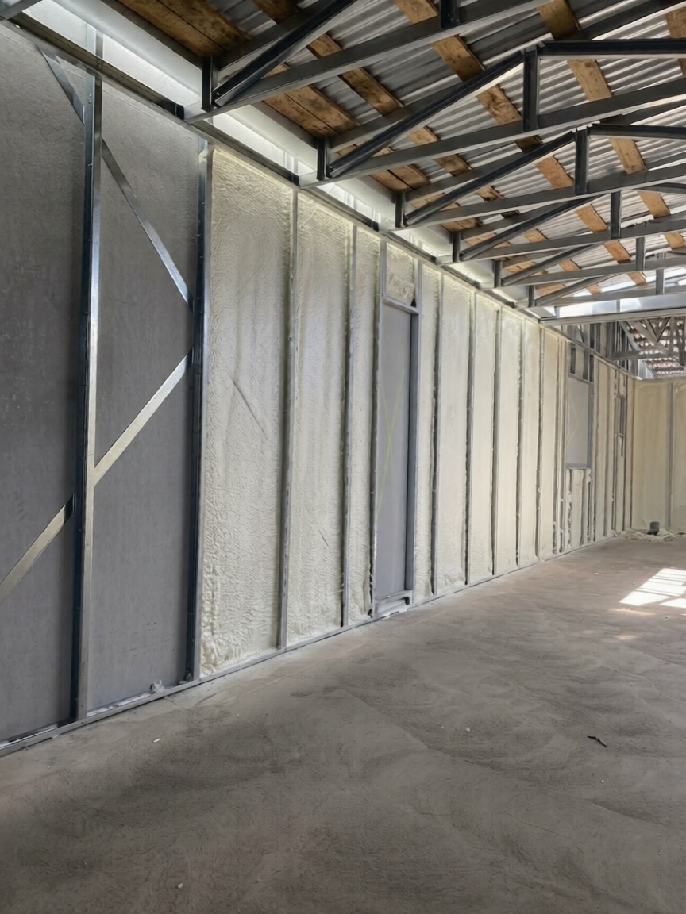
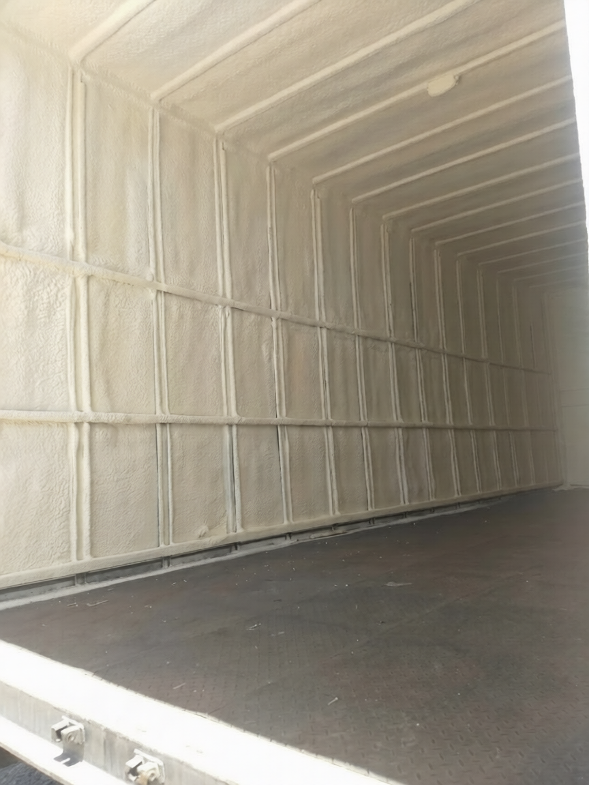
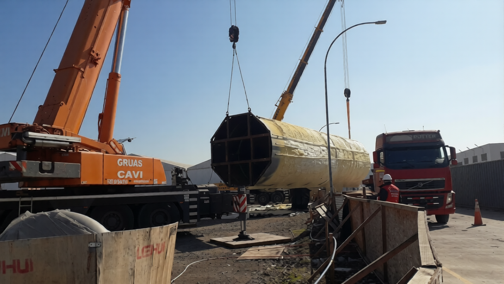
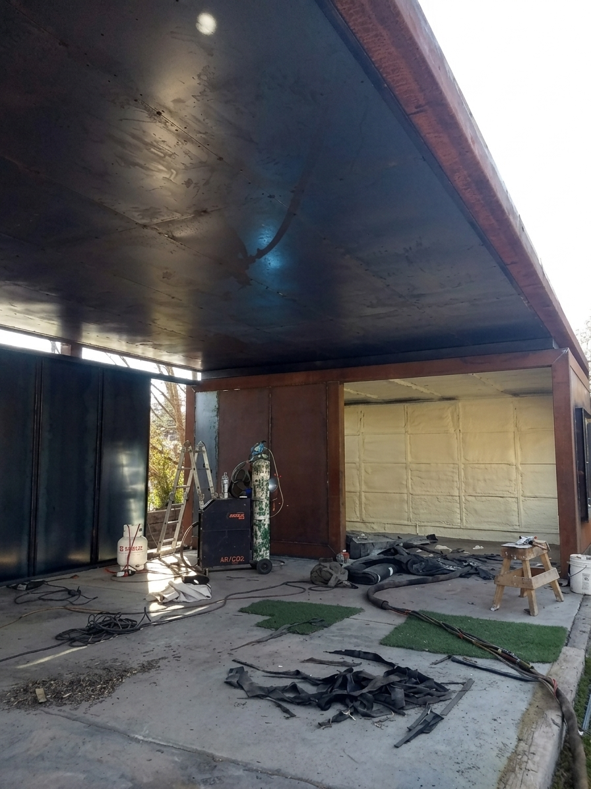
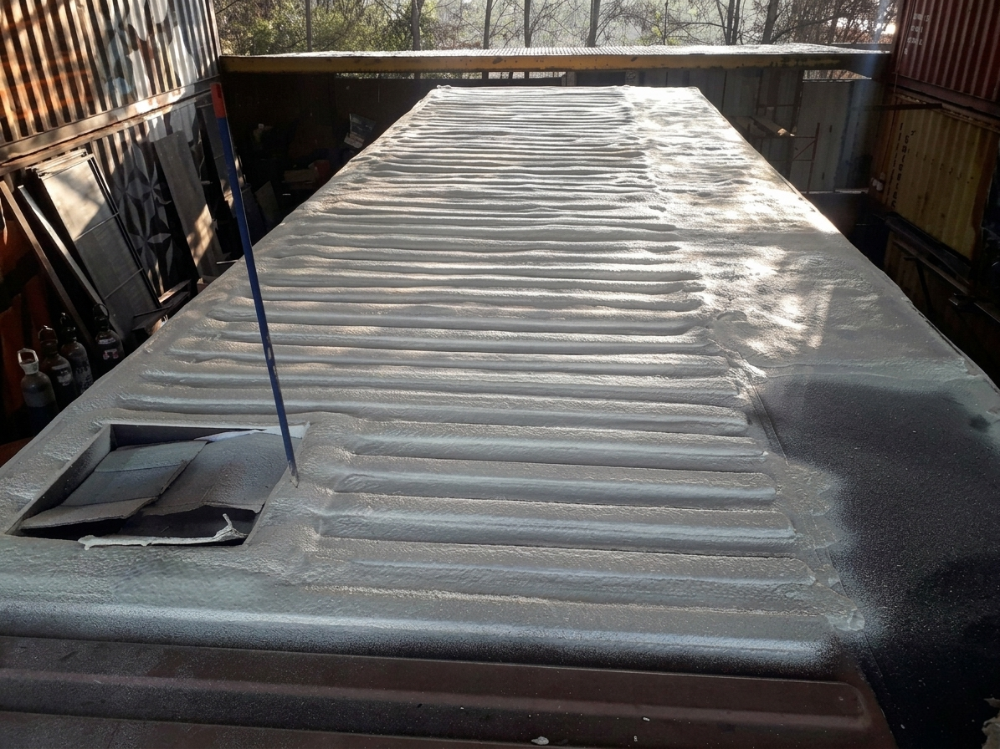
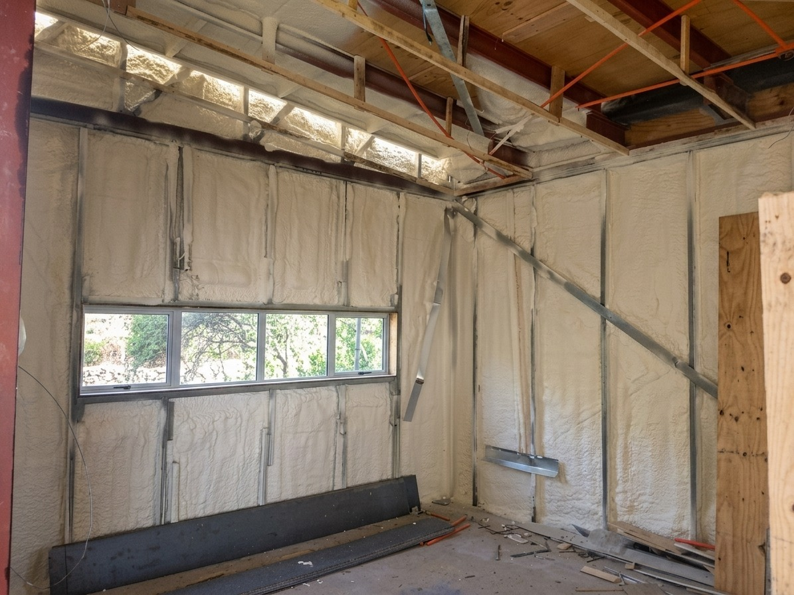
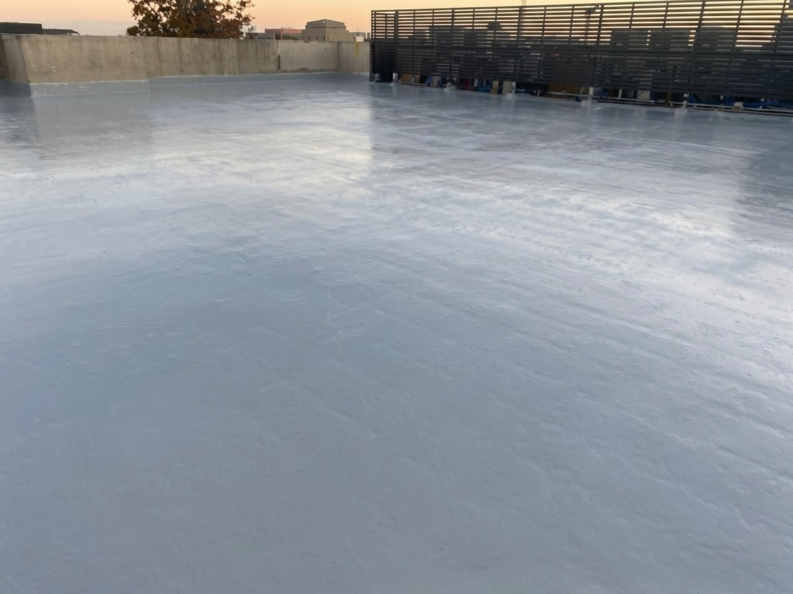
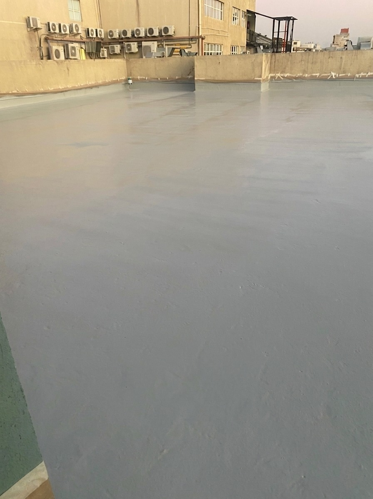
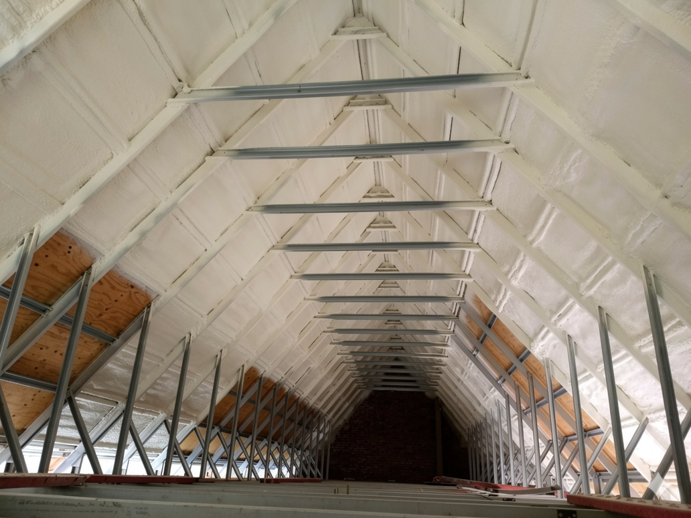
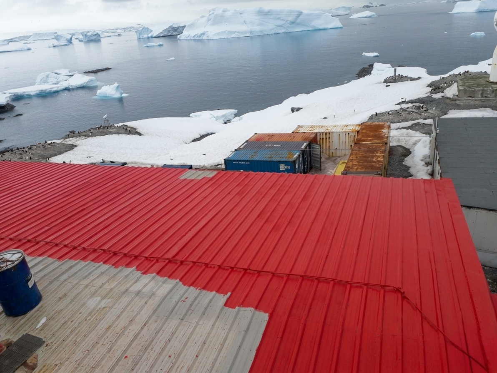
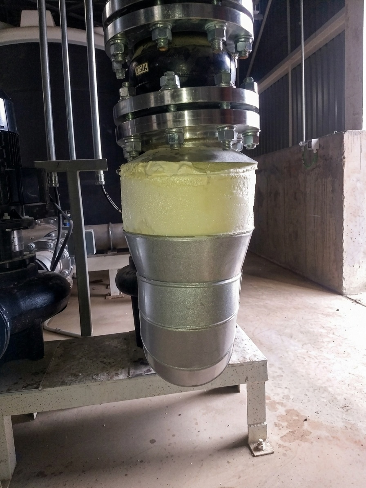
Preguntas Frecuentes
Respondemos las dudas más comunes sobre aislamiento con poliuretano e impermeabilización con poliurea.
Ambos son polímeros de dos componentes que reaccionan al mezclarlos, pero tienen química y propósitos distintos. El poliuretano (poliol + isocianato) se expande al aplicarse formando una espuma rígida o flexible ideal para aislamiento térmico y acústico. La poliurea (poliamina + isocianato) reacciona en 3–7 segundos formando un elastómero denso, impermeable y de altísima resistencia mecánica, usado para impermeabilización y protección de superficies. En resumen: el poliuretano insula, la poliurea impermeabiliza y protege.
La reacción química es casi instantánea: el poliuretano y la poliurea alcanzan tiempo de gel entre 5 y 15 segundos al salir de la pistola. Las superficies son transitables en 30 a 60 minutos y alcanzan propiedades mecánicas completas a las 24 horas. Un equipo de dos operarios puede aplicar 100 a 250 m²/día según el espesor y la complejidad de la geometría. Las obras de gran envergadura se ejecutan por sectores sin paralizar la operación completa.
Todos los proyectos incluyen un certificado de garantía técnica por escrito que cubre: adherencia (≥ 1,5 MPa en ensayo pull-off), espesor de aplicación (≥ al especificado), y estanqueidad ante filtraciones. La garantía es exigible ante fallas de adherencia, delaminación o pérdida de estanqueidad atribuibles a la aplicación, no a daños mecánicos posteriores. Adicionalmente, entregamos un informe técnico de obra con fotografías y mediciones de control de calidad.
Sí. Contamos con capacidad técnica y logística para trasladar equipos reactores a cualquier región. Tenemos operativa real desde el norte grande hasta el territorio antártico, atendiendo proyectos residenciales, comerciales, agrícolas, mineros e industriales.
El precio se establece por metro cuadrado ($/m²) y varía según cuatro factores: (1) tipo de polímero (aislamiento o impermeabilización), (2) espesor requerido en milímetros según normativa o especificación técnica, (3) preparación de superficie (limpieza, primer, sandblasting), y (4) accesibilidad y logística según la región. El uso de la calculadora en esta página entrega un estimado referencial. Para un presupuesto exacto, solicitamos una visita técnica gratuita en terreno.
Sí. Una vez que la reacción química se completa (cura completa a las 24 h), los polímeros son 100% sólidos, inertes y químicamente estables: no emiten COVs, solventes ni gases. Existen formulaciones de poliurea pura compatibles con el almacenamiento de agua potable y productos alimentarios, según las especificaciones técnicas de sus fabricantes — la selección del producto adecuado para cada uso se informa en la ficha técnica de la obra. La fase de aplicación requiere ventilación adecuada y EPP por el aerosol generado: nuestros operarios trabajan con equipos de protección respiratoria de nivel P3.
Nuestro Compromiso Técnico
Garantizamos los más altos estándares de calidad y seguridad en cada aplicación a lo largo de Chile.
Materiales de Alta Pureza
Formulaciones de poliuretano y poliurea pura certificada aplicadas bajo estrictas normas, asegurando máxima elasticidad, adherencia y resistencia ante el desgaste climático.
Eficiencia y Puntualidad
Trasladamos reactores industriales a cualquier región del país, asegurando ejecución ágil y coordinada que respeta rigurosamente los plazos de obra.
Soporte y Post-Venta
Nuestro compromiso va más allá de la aplicación. Entregamos asistencia post-aplicación continua y control de calidad para garantizar un sellado hermético de alta durabilidad.
¿Trabajaste con nosotros?
Reseñas de clientes reales
Trabajamos con empresas y personas en todo Chile. Si eres cliente de Aispoltec, te invitamos a compartir tu experiencia en Google — es la forma más transparente de mostrar nuestro trabajo.
Dejar reseña en GoogleMás de 15 años de experiencia
Nuestro equipo acumula más de 15 años de experiencia aplicando poliuretano y poliurea en proyectos residenciales, comerciales e industriales a lo largo de Chile. Cada obra habla por sí sola.
Ver galería de proyectosCuéntanos tu proyecto
Cada proyecto es distinto. Contáctanos para conversar sobre tu necesidad de aislamiento o impermeabilización — hacemos una evaluación técnica gratuita antes de cualquier compromiso.
Solicitar evaluación gratuitaEvaluación Gratuita
¿Tienes un proyecto de aislamiento o impermeabilización? Nuestro equipo de ingenieros está listo para asesorarte. Coordinamos una evaluación técnica en terreno sin costo ni compromiso.
Teléfono
+56 9 7967 9866
Email
aispoltec@gmail.com
Cobertura
Todo Chile · Desde Atacama hasta la Antártica
La evaluación incluye:
- Visita técnica en terreno sin costo
- Medición de superficies y diagnóstico del estado actual
- Recomendación técnica del polímero más adecuado
- Presupuesto detallado por escrito sin compromiso